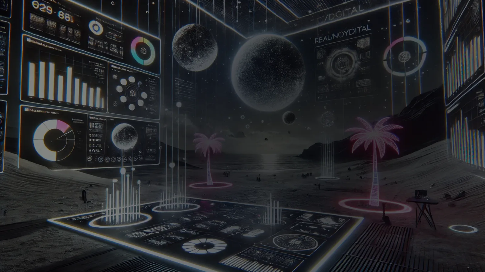

Creative Direction
Conceito, narrativa, visual key, apresentacao e criterio de decisao.
Creative Director
Direcao criativa, storytelling visual e sistemas de producao para campanhas, experiencias, conteudo medico, 3D e fluxos com IA.
View selected workSelected work
About
O portfolio reune acoes promocionais, estudos criativos, materiais de produto, campanhas motivacionais, visual aids e experimentos de 3D/IA. A leitura foi organizada para mostrar pensamento, aplicacao e variedade sem virar um deposito de slides.
Conceito, narrativa, visual key, apresentacao e criterio de decisao.
Desdobramentos para incentivo, trade, medico, social e ponto de contato fisico.
Exploracao visual, prototipos, mood, iteracoes e simulacao de experiencias.
Design, composicao, 3D, apresentacoes, ajudas visuais e materiais de marca.

AI Lab
Os estudos usam IA para acelerar exploracao, visualizar cenas, testar universos e vender uma ideia antes da producao final. O ganho esta no raciocinio criativo que guia a ferramenta.
Contact
Creative direction, campaigns, 3D, visual storytelling and AI-assisted workflows.
LinkedIn